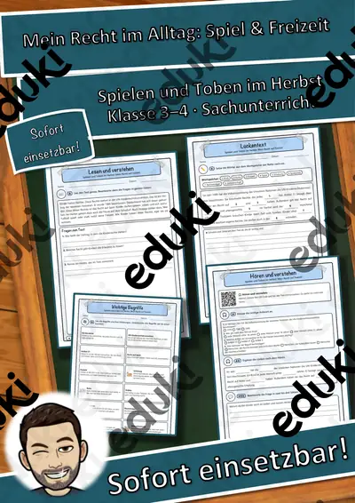

Materialpaket Lesespurgeschichten Sachunterricht Klasse 4 – Freizeit, Verkehr und Bräuche: 6 Lesespuren mit Rätselaufgaben, dreifach differenziert
6 Lesespuren für die 4. Klasse – im Paket günstiger als einzeln
Mit diesem Materialpaket bekommst du 6 meiner Lesespurgeschichten für die 4. Klasse aus dem Fach Sachunterricht zum Themenbereich „Freizeit, Verkehr und Bräuche“ in einem Download. Alle Lesespuren sind sofort einsetzbar, dreifach differenziert (leicht ★ / mittel ★★ / schwer ★★★) und jeweils in Farbe und Schwarz-Weiß enthalten. So arbeitet deine ganze Klasse am selben Thema, und jedes Kind liest auf seinem Niveau.
Preisvorteil: Einzeln gekauft kosten die 6 Materialien regulär zusammen 23,94 €. Im Paket zahlst du nur 11,97 € und sparst damit rund 50 %.Die 6 Materialien im Paket
Der Campingplatz (Klasse 4 – Sachunterricht): Die Kinder begleiten Lena und Jonas und das Camping-Kind Ben auf einem Rundgang über den ganzen Platz – von der Anmeldung am Eingang über Zelt, Wohnwagen, Feuerstelle, Grillplatz, Spielplatz und Sanitärhaus bis zum Kiosk, zum Badesee und zur Liegewiese.
Fasching, Fastnacht und Karneval – Bräuche in der närrischen Zeit (Klasse 4 – Sachunterricht): Die passende Lesespur für den Sachunterricht in Klasse 4 (auch 3 und 5) – ideal in der Faschingszeit zu Festen im Jahreslauf und regionalen Bräuchen, für Stationenlernen oder Vertretungsstunden.
Die Fischerei (Klasse 4 – Sachunterricht): Die Kinder begleiten Lena und Jonas und den jungen Fischerjungen Mats Schritt für Schritt auf dem Weg vom Fang bis zum Fischmarkt – vom Fischerboot über das Fangnetz, den Hafenkai, die Fischkisten, die Eisstation, die Waage und den Räucherofen bis zur Fischtheke und zur Kasse.
Die Kletterhalle (Klasse 4 – Sachunterricht): Ganz nebenbei lernen die Kinder, wie man sich beim Klettern richtig ausrüstet, sich gegenseitig sichert und Schritt für Schritt sicher nach oben kommt.
Die Radfahrprüfung – Vorfahrt, Verkehrszeichen, sicheres Abbiegen (Klasse 4 – Sachunterricht): Die passende Lesespur für HSU / Sachunterricht in Klasse 4 (auch 3) – zur Vorbereitung auf die Radfahrausbildung und Fahrradprüfung, für Verkehrserziehung, Stationenlernen und Vertretungsstunden.
Verkehrsschilder – Formen, Farben, Bedeutungen (Klasse 4 – Sachunterricht): Zeynep erzählt, wie sie mit Mats und der Polizistin einen Schilder-Rundgang macht und lernt, Verkehrszeichen an Form und Farbe zu erkennen.
Lehrplanbezug (LehrplanPLUS Bayern, Grundschule, Jahrgangsstufe 4)Deutsch – Lesen, mit Texten und weiteren Medien umgehen: Die Kinder lesen sinnentnehmend, wenden Lesestrategien an und entnehmen gezielt Informationen, denn nur wer genau liest, findet die nächste Station.
Deutsch – Sprechen und Zuhören: Das Hörverstehen per QR-Code schult konzentriertes Zuhören; Gespräche über Bräuche und Sachthemen fördern das Erzählen und Begründen.
Deutsch – Schreiben: Die Kinder beantworten Fragen schriftlich, füllen Steckbriefe aus und notieren Lösungen.
Sachunterricht: Der Campingplatz, Fasching, Fastnacht und Karneval – Bräuche in der närrischen Zeit, Die Fischerei, Die Kletterhalle, Die Radfahrprüfung – Vorfahrt, Verkehrszeichen, sicheres Abbiegen, Verkehrsschilder – Formen, Farben, BedeutungenSo funktioniert eine Lesespur
Die Kinder lesen ab START einen kurzen Abschnitt. Am Ende verrät ein Hinweis den nächsten Ort, den sie auf dem farbigen Plan suchen. Dort lesen sie weiter. An jeder richtigen Station sammeln sie einen Buchstaben, und eingeplante Sackgassen dienen der Selbstkontrolle. Am Ende ergeben die umgestellten Buchstaben ein geheimes Lösungswort.
Das ist in jeder Lesespur enthalten
Lesespurgeschichte in 3 Niveaus (leicht ★, mittel ★★, schwer ★★★)farbiger Plan als Suchkarte
Rätselaufgaben auf dem Weg, z. B. Zuordnen, Quiz, Rechenaufgabe und Steckbrief
Hörverstehen mit QR-Code zum Hörtext
Rätselseite mit Wörter-Suchsel und Wissensfragen
Ausmalbild zum Themaausführliches Lösungsblatt für die Lehrkraftalles zusätzlich als drucksparende Schwarz-Weiß-Variante
Einsatzmöglichkeiten
Alle Materialien passen das ganze Schuljahr über, auch als Thema der Woche oder Werkstatt. Du kannst sie im Stationenlernen, in Freiarbeit und Wochenplan, in der Leseförderung und in Förderstunden einsetzen. In Vertretungsstunden funktionieren sie ohne Vorbereitung. Sie eignen sich für alle Schulen in allen Bundesländern.
Viel Freude mit deiner Klasse wünscht dir Snice!
Ähnliche Materialien

Verkehr Lückentext mit Wortspeicher Hörverstehen und Suchsel

Mein Recht im Alltag Materialpaket: 3 Einheiten – Alltag den Kinderrechten zuordnen und selbst reflektieren (Grundschule

Materialpaket Steckbriefe Länder Europa #demokratiestärken

Fasching, Fastnacht und Karneval – Bräuche in der närrischen Zeit – Lesespurgeschichte mit Rätselaufgaben (Klasse 4)

Mein Recht im Alltag Spielen und Toben im Herbst: Mein Recht auf Freizeit – Alltag den Kinderrechten zuordnen und selbst

Sicher unterwegs im Verkehr – Lesespurgeschichte mit Rätselaufgaben (Klasse 5)

Materialpaket Lesespurgeschichten Sachunterricht Klasse 5: 7 Lesespuren mit Rätselaufgaben, dreifach differenziert